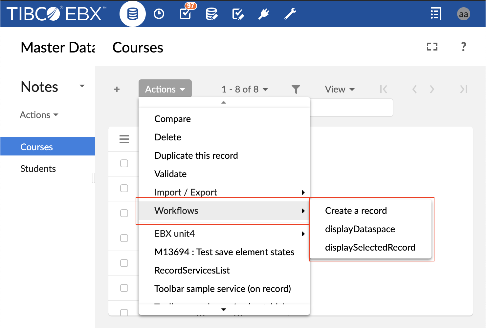
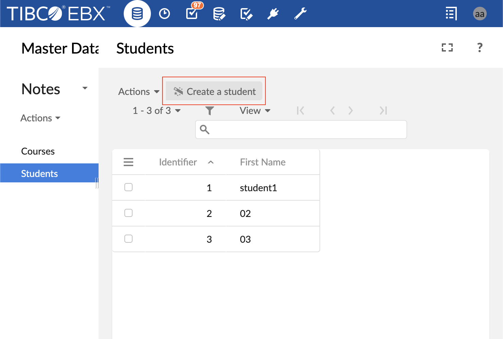
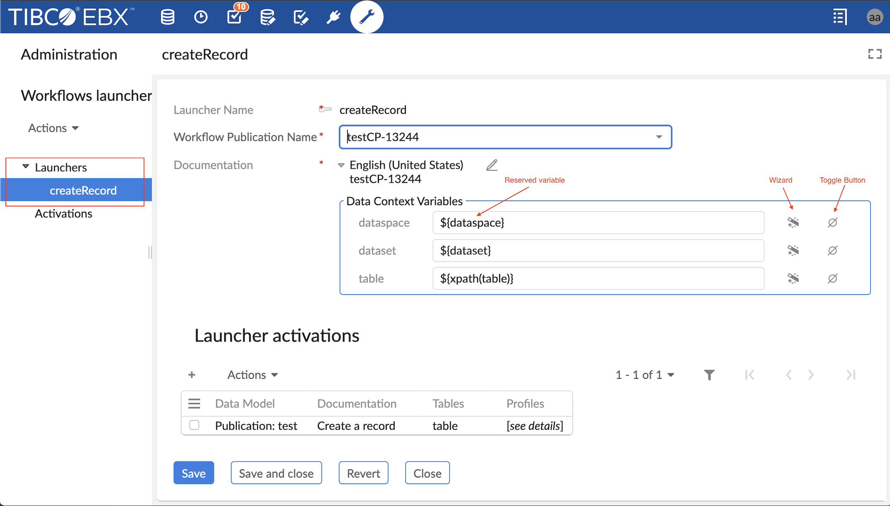
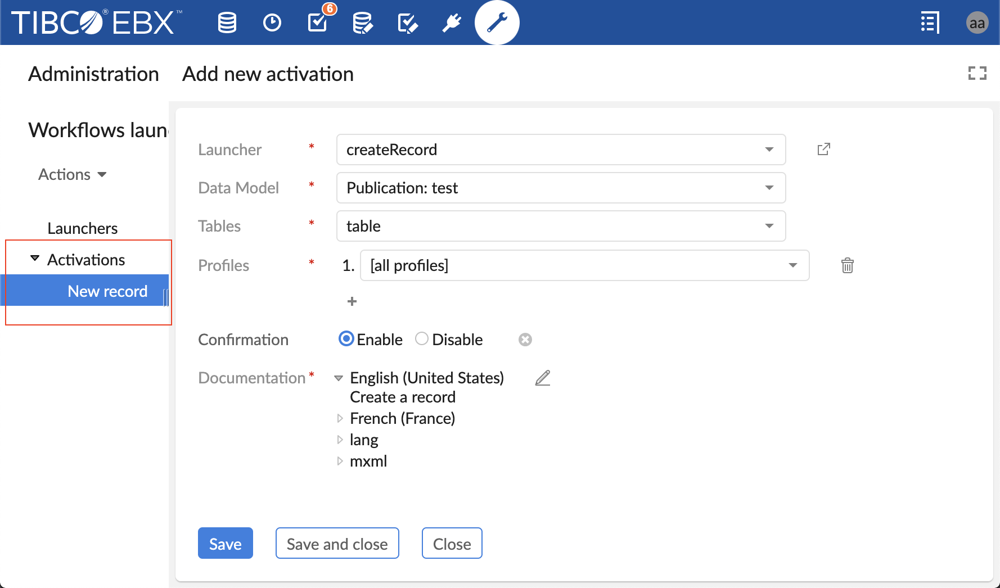
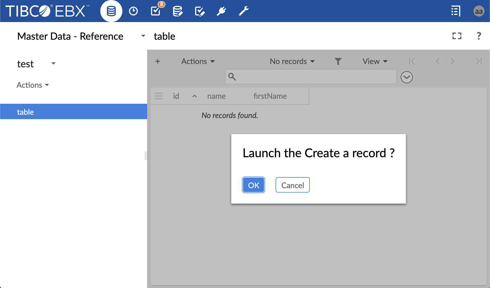
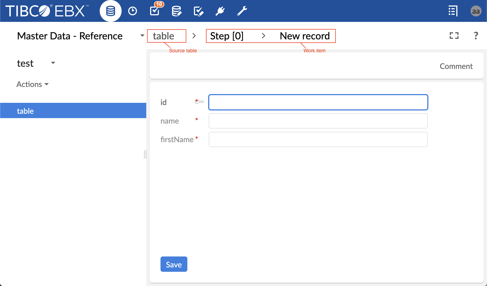
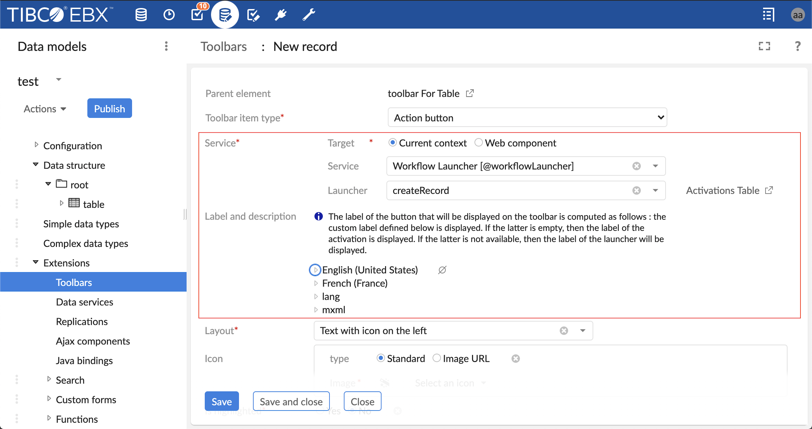
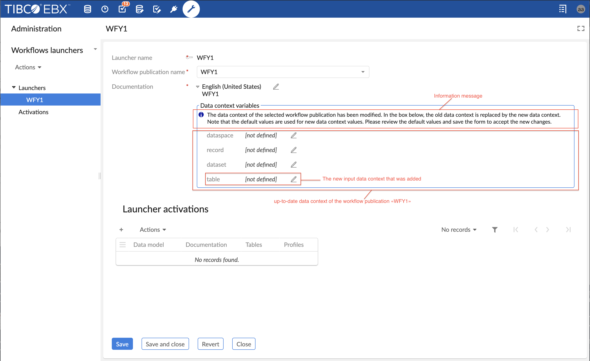

A Workflow Launcher is a user service for launching workflows in TIBCO EBX® directly from the data section without passing by the data workflow's inbox. This feature does not create workflow publications but launches existing ones. It offers several advantages, including the ability to launch workflow publication directly from the data section (table view, hierarchy view or record form view). In this way, the user experience is improved by avoiding to the user shifting his attention back and forth between the data section and the data workflow section. Hence, the user can launch a workflow while still focusing on his main task.
The second advantage is that it allows to launch the same workflow publication from any data selection. Thanks to the dynamic mapping of the workflow data context with the current data selection. The dynamic mapping offers the possibility to initialize the data context inputs at launch time. Hence, in order to launch the same workflow from n different data selections, it is not longer necessary to duplicate n times the same workflow model with different data selections or to provide an initial user service to configure the data to select. The last solution is a programmatic solution which would solve the previously cited problems, however it is not the ideal solution because it does not fulfill the commitment zero line of code.
Understanding this feature requires familiarization with the following concepts:
Concept | Description/Link |
|---|---|
Workflow model | |
Data context | |
Workflow publication | |
Publication name | A unique identifier of a workflow publication |
Data Workflow | |
Data section | Is the data user interface which displays the datasets and tables in EBX. it is accessible from the main header. |
Workflow launchers dataset | It contains two tables Launchers and Activations. With this dataset the user can configure the launchers of workflow publications and activate them for a particular user(s) and table(s). It is available in the Administration area in a section called workflow management. |
Launcher | An entity which is used by the service workflow launcher to identify the workflow publication to launch and how to initialize its data context. |
Launchers | A table in the workflow launchers dataset, each record is a Launcher type. In order to be able to launch a workflow publication from a data section, a launcher which points to a workflow publication should be added in this table. |
Activation | An entity which hides or shows the launcher of a workflow publication for a given user profile(s) and for a particular table(s) from the data section. |
Activations | A table in the workflow launchers dataset, each record is an Activation type. In order to make a workflow available on the toolbar of a particular table and for a particular user, a record with the corresponding launcher should be created in this table. |
Dynamic mapping of data context | Is the process of initialization of data context input variables when launching a workflow publication. Before, the values of the data context were static defined at modeling phase or set dynamically with Java coding, but now it is possible to set dynamically the values of the data contexts, i.e. at launch time, with zero line of code. |
Reserved variables for data context | A set of reserved variables. These variables define which data selection should be mapped with a data context variable. The possible values are: ${dataspace}, ${dataset}, ${table} and ${record}. For example, if the value ${table} is used for a data context variable, this means that this variable will be mapped with the current adaptation table reference, at launch time. |
As previously stated, workflow launchers are now available directly on the toolbar of tables, records and hierarchies. There are a number of ways to display a workflow launcher on the toolbar of a table in data section. The display depends on the type of the toolbar (default toolbar or custom toolbar in the DMA) and whether or not smart filtering is applied. In the case of default toolbar, the action menu displays all the workflow launchers in a separate submenu called Workflows (see the screenshot below).

In the case of a custom toolbar,it is possible to define an action button (see the screenshot below) or action menu item for a particular workflow launcher. And finally, if the smart filtering policy is activated, then all the workflow launchers that are displayed using an action button or action menu item will not appear in the Action menu.

In order to display a workflow launcher on a toolbar, first, a launcher must be created and configured (see creating and setting workflow launcher section), then, an activation should be created for this launcher (see activating workflow launcher section). Note that, if the current user has no rights to launch a workflow publication then the workflow launcher will not be available on the toolbar. Also, if the workflow publication is deleted or if there is any errors or warnings in the configuration or activation of the launcher, then the corresponding workflow launcher will not be available on the toolbar.
The title and tooltip of the button that will be displayed on the toolbar, are computed in the following order of priority: the custom documentation of the launcher activation is used, otherwise the documentation of the launcher is used. If description is left empty, then the following description is used "This user service will launch a data workflow.".
Particular attention should be paid for the workflow launchers which are available on the record form. Only the launchers which requires record selection are displayed on the toolbar of a record form. A workflow launcher which requires record selection is the one for which one of the data context variable is mapped with the reserved variable ${record} in the configuration of its launcher.
A launcher is the entity which is used by the service Workflow Launcher to identify the workflow publication to launch and how to initialize its Data context. In order to create a launcher for a particular workflow publication, first navigate to the administration area, then the workflow management section, select the workflow launchers dataset, select the launchers table, and then add a new record. The second step, is to setup the following fields of the record:
Field name | Description |
|---|---|
Launcher name | A unique identifier. It is used to select a launcher in the activation phase. |
Workflow publication name | Defines the workflow publication that will be launched when the user service "workflow launcher" is executed. The workflow model should be first defined and published to be available in the list. |
Data context variables | This field contains the list of input variables which were defined in the data context configuration phase of a workflow model. Each line is composed of a label, a value, and a toggle button to switch between default and overwritten value (see the screenshot below). The label is the name of the variable set by the user in the data context of the workflow model. By default, the value of each variable is the default one set in the data context. If the default value field is left empty in the data context, then the value of the variable is set to undefined. If the toggle button is set on overwritten value mode, then a wizard is made available on the right of the input field which allows to select a reserved variable. When overwriting the value of a data context variable, two options are possibles: the override value may be a constant or a reserved variable. If a constant is used, then the value of the data context variable will not depend on the entity selection at launch time. However, if a reserved variable is used, such as ${dataspace}, the value of the corresponding variable will be mapped to the current entity selection, for example the data context variable which is assigned to ${dataspace} will be initialized with the current dataspace at launch time. NoteIf there are no input variables in the data context of the workflow model, then this field should be hidden. If the workflow publication name field changes then this input is updated automatically and displays a new list of data context. |
Documentation | A documentation is composed of a label and a description. The default value of the label is the publication name which is inherited from the field "workflow publication name" and the default value of the description is empty. If the "Publication name" field changes then the documentation will update automatically." |
At the bottom of a launcher record, a table of all activations of the current launcher is displayed (see the section Launcher activations in the screenshot below).

An activation is the entity which controls the availability of a workflow launcher on a table or record form. In order to display a workflow launcher in a toolbar of a particular table, first create a launcher, then navigate to the administration area, select the workflow management section, select the workflow launchers dataset, select the activations table, and then add a new record. The second step, is to setup the following fields of the record:
Field name | Description |
|---|---|
Launcher | A unique identifier of a launcher which is associated to a publication name of the target workflow publication. This field allows to select the launcher which will be displayed in the data section. |
Data model | The schema reference of a published Data Model. Only schemas that are published and used in Datasets are available. |
Tables | The identifier of a table which will display the workflow launcher. It is possible to select one particular table or "All tables". This selector displays all tables which are contained in the field Data Model. |
Profiles | List of profiles which are allowed to see and launch the workflow launcher in the previously selected tables. |
Confirmation | This field allows displaying or not a dialog box to confirm launching of a data workflow (see screenshot about confirmation message. By default this feature is deactivated, in order to display the dialog box, the value "Enabled" should be checked (see screenshot below). |
Documentation | A documentation is composed of a label and a description. The default value of the label and description are inherited from the documentation field of the launcher. This field is used to display the title of the button of the user service in the toolbar. The description is displayed when the user hovers over that button. The documentation of the activation has a higher priority over the one of the launcher. Note that, if the description of the documentation is left empty then the following one is displayed "This user service will launch a data workflow. In the case of the custom toolbar, the value of this field is also used for action button and action menu item if the documentation field of the action button or action menu item is left empty. |

Once a launcher created and activated the corresponding workflow launcher becomes available on the toolbar's action menu. To launch the workflow click on the button of the workflow launchers(see screenshot about default display of a workflow launcher ).
If the option Confirmation is enabled, then a dialog box displays to ask the user the confirmation before launching the selected data workflow (see screenshot about data workflow launch confirmation). Otherwise, the dialog box does not display and different outcomes are possible:
If the option automatically open the first step is activated and the user has the rights to execute the first work item of the workflow, then the workflow launches and the first work item displays directly in the workspace of the Data section. While displaying the work item in the workspace, the origin data selection still displayed on the breadcrumb which allows to the user to maintain an overall contextual awareness (see screenshot about displaying a work item on the data section ).
If the option automatically open the first step is deactivated and the user has the rights to launch the workflow, then the workflow is launched and added to the data workflow inbox. An information message informs the user that the workflow has been launched successfully and that it is necessary to go to the inbox of the data workflow section to display and execute the first work item.
If the workflow requires record selection (see note in the section workflow launcher in data area ), the workflow is launched and displayed if and only if a record is selected otherwise an error message is displayed informing the user that a record should be selected. A record can be selected manually from a table view or automatically when displaying a record form.
If more than one record are selected, then a warning message notifies that only one record should be selected.


The workflow launchers can be made available not only on default toolbar but also on custom toolbar. A workflow launcher can be added on a custom toolbar as an action button or as an action menu item in a custom menu group. Adding an action button or an action menu item to launch a workflow on a custom toolbar follows a similar procedure as for common user services: first, set the target field to current context otherwise the user service workflow launcher will not be available, then select the user service workflow launcher. When the service workflow launcher is selected, a new field Launcher, exclusive for workflow launcher user service, appears below the service input field (see screenshot about adding a workflow launcher on custom toolbar ).
The field Launcher displays the list of launchers that have already been created in the table "Activation/workflow management/workflow launcher/Launchers" (see section about creating and configuring launchers) . Therefore, before adding a workflow launcher in a custom toolbar the launcher should be created and configured for this workflow launcher.
As for default toolbar, in order to show the workflow launcher on a custom toolbar its launcher should be activated in "Activation/workflow management/workflow launcher/activations". A quick link to access the activations table of the launchers is displayed on the right of the field Launcher (see screenshot about adding a workflow launcher on custom toolbar )
The field Label and description displays the label and description inherited from the launcher (see screenshot about adding a workflow launcher on custom toolbar) , then if the launcher field changes, the label and description should update automatically. This field can be overridden to customize the label and description of the action button on the toolbar. The label and description that will be displayed on the toolbar, are computed in the following order of priority: the custom value of the field Label and description of the action button is used, if this field is left empty or contains the default label of the launcher, then the label and description of the launcher activation are displayed. If this last one is left empty, then the following description is used "This user service will launch a data workflow.".
The label and description which are displayed on the toolbar in the data section and the label of the action button in the toolbar tree in the DMA could be different. This is the case when the field "Label and description" of the "action button" is left empty (neither default nor custom label is defined). The label of the "action button" in the toolbar tree in the DMA is inherited from the label of the launcher, however, the label and description on the toolbar in the data section are set to the label and description of the activation of the launcher.

After creating a launcher which points to a workflow publication, the workflow model of this publication may be changed and republished. For instance, the data context of the workflow model may be changed: one or more variable data context can be added; one or more variable data context can be removed; the name of a variable can be changed. In this particular case, the launchers which points to this workflow publication should be reviewed and validated (saved) by the user because the data context used by these launchers is no more valid and it should be updated to match the one of the up-to-date workflow publication.
After republishing a workflow model, the user is notified if any of the workflow launcher points to the current workflow publication and if it should be reviewed. For that purpose, after publishing a workflow model, a preview button is displays allowing a quick access to the launchers in question . Note that if the user has no rights to access the workflow launchers list, then the names of those launchers are displayed .
When the user access to one of these launchers, via the preview button in the workflow model section or via the Administration section, the persisted data context is replaced with the up-to-date data context of the workflow publication, however the new data context is not yet persisted for the current launcher. In order to update the data context of the launcher, the user should first review the values and then save to accept the new changes (see screenshot about accessing a launcher after modification of the data context of the corresponding workflow publication ).
